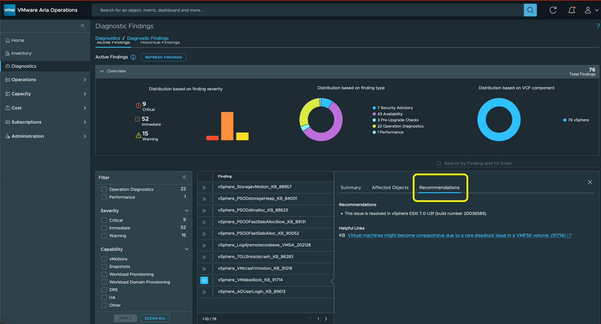
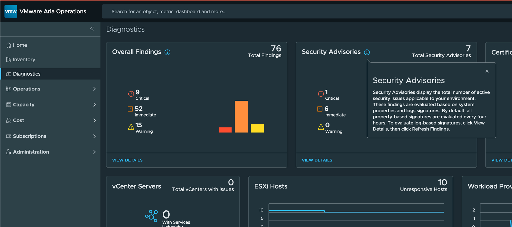
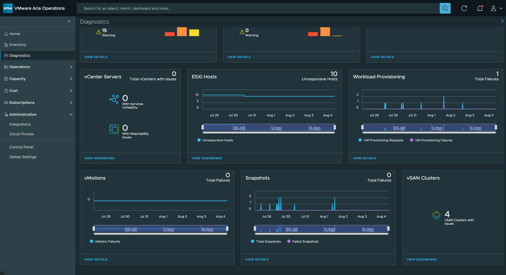
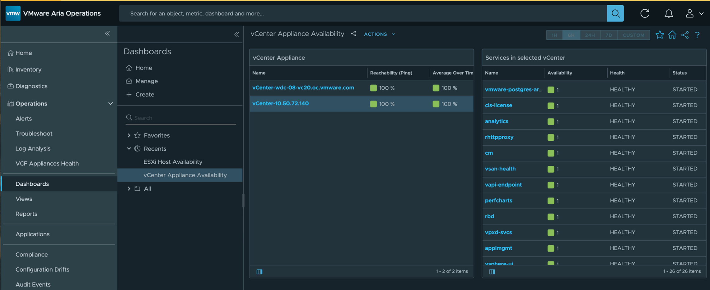
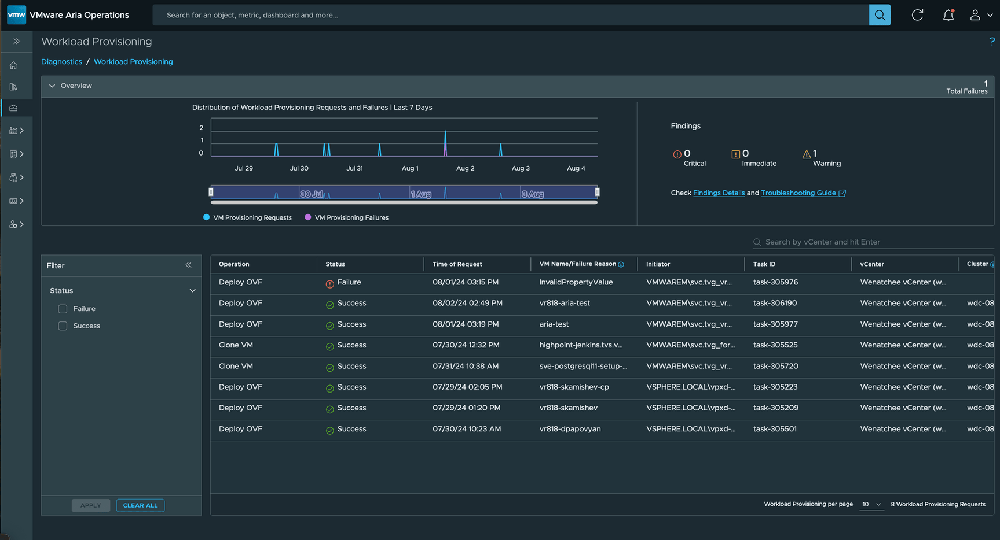
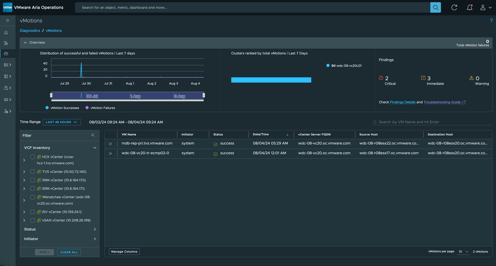

With Aria Operations 8.18, there are plenty of new and improved features to explore. One of the standout additions is Diagnostics. You’ll immediately notice Diagnostics as it takes the top-left spot in the newly redesigned UI. For full documentation, simply click the question mark in the top-right corner.
Keep in mind, Diagnostics requires integration with Aria Operations for Logs via the native integration.
So much useful information is now available in one place, all related to VMware Private Cloud. Let's dive deeper!
What are "Overall Findings"?
"Overall Findings" refer to insights generated from your environment, based on properties and logs detected by the Diagnostics Management Pack. This pack includes vSphere benchmarks, log signatures, and much more. The Management Pack is enabled by default in VCF 5.2 (Aria Operations 8.18) and will also be visible in version 8.18.1. The pack allows for updates to Findings outside the regular product release cycle.
Remember, Aria Operations for Logs is essential for the Diagnostics feature.
To dive deeper into each Finding, simply click VIEW DETAILS.

Active and Historical Findings
Once inside the Diagnostics dashboard, you'll be able to explore a range of findings, including:
- Active Findings
- Historical Findings
- Findings by Severity and Type
Selecting a specific Finding will show more details, such as the object it’s related to and remediation recommendations, including helpful KB articles.
Security Advisories: Stay Ahead of Threats
Security Advisories highlight active security issues within your VMware Private Cloud. These are based on discoveries made by the embedded Diagnostics Management Pack. As with other Diagnostics features, Aria Operations for Logs is required for this functionality.
Click VIEW DETAILS to get more specific insights, just like you would with Findings.
Selecting an individual advisory reveals additional information, including the object affected, remediation steps, and helpful links.
For a list of the findings, benchmarks, and log signatures included in VCF 5.2 (Aria 8.18) see this KB.
Managing Certificates in VMware Private Cloud
The Certificates section, located in the top-right corner of your dashboard, gives you visibility into the expiration status of certificates across your VMware Private Cloud environment. This feature works similarly to the previous VMware Infrastructure Health Management Pack.
Click VIEW DETAILS to explore more on certificate health.
Here, you’ll also find options to export and/or update certificates.
Monitoring Health Across VMware Cloud Foundation
The second and third rows of Diagnostics provide detailed insights into the health of key VMware Cloud Foundation pillars like vCenters, ESXi Host Systems, vSAN, and others.
The three out-of-the-box dashboards - vCenter Servers, ESXi Hosts, and vSAN Clusters—are included in the vSphere and vSAN Management Packs. Clicking VIEW DASHBOARD on the vCenter Servers widget allows you to see your vCenters and their associated services.
If you don’t see all your vCenters or vCenter Services, ensure that the credentials for your vCenter Adapter Instances are configured with the proper permissions. Additionally, if you’re running vCenter 8.0.3 or higher, the VMware Service Lifecycle Manager API service should be set to "Started" and "Automatic." For a full list of requirements, refer to this resource.
Click VIEW DASHBOARD in the ESXi Hosts widget to gain insights into unresponsive hosts, hosts in maintenance mode, or hosts that are powered off or in an unknown power state.
Similarly, clicking VIEW DASHBOARD in the vSAN Clusters widget reveals detailed information about your vSAN clusters, including properties and alert statuses.
Additional Insights: Workload Provisioning, vMotions, and VM Snapshots
The next section of Diagnostics focuses on Workload Provisioning, vMotions, and VM Snapshots—offering immediate visibility into related failures.
Click VIEW DETAILS in the Workload Provisioning widget to see details on VMs being deployed, failed provisioning attempts, and the reasons behind them.
Click VIEW DETAILS in the vMotions widget for an in-depth view of VMware Private Cloud vMotions.
Additionally, we’ve published a companion KB to help you troubleshoot any issues surfaced in this section.
Finally, the VM Snapshots widget allows you to view failed snapshots, including those that require consolidation or deletion. Simply click VIEW DETAILS to dive deeper into the specifics.
Streamlined Diagnostics Replaces Skyline
The Diagnostics feature in VCF 5.2 (Aria 8.18) replaces many of the functionalities previously offered by Skyline, which is set to reach its end-of-life later this year. The ability to easily update Diagnostics with benchmarks, log signatures, and rules will continue to improve with future releases.